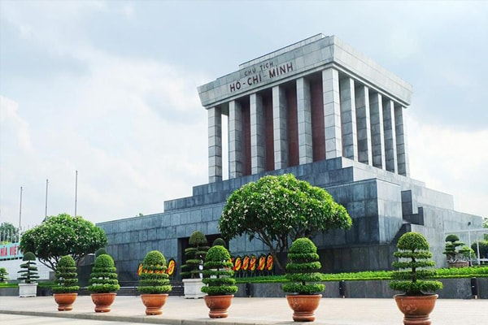
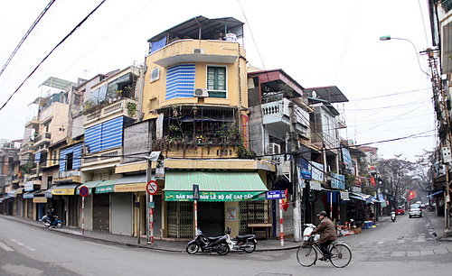
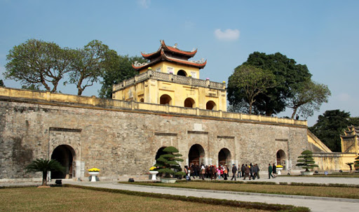
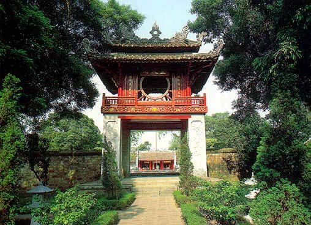

Hồ Gươm

Hồ Hoàn Kiếm còn được gọi là Hồ Gươm là một hồ nước ngọt tự nhiên nằm ở trung tâm thành phố Hà Nội. Hồ có diện tích khoảng 12 ha. Trước kia, hồ còn có các tên gọi là hồ Lục Thủy (vì nước có màu xanh quanh năm), hồ Thủy Quân (dùng để duyệt thủy binh), hồ Tả Vọng và Hữu Vọng (trong thời Lê mạt). Tên gọi Hoàn Kiếm xuất hiện vào đầu thế kỷ 15 gắn với truyền thuyết vua Lê Lợi trả gươm báu cho Rùa thần. Theo truyền thuyết, trong một lần vua Lê Lợi dạo chơi trên thuyền, bỗng một con rùa vàng nổi lên mặt nước đòi nhà vua trả thanh gươm mà Long Vương cho mượn để đánh đuổi quân Minh xâm lược. Nhà vua liền trả gươm cho rùa thần và rùa lặn xuống nước biến mất. Từ đó hồ được lấy tên là hồ Hoàn Kiếm. Tên hồ còn được lấy để đặt cho một quận trung tâm của Hà Nội (quận Hoàn Kiếm) và là hồ nước duy nhất của quận này cho đến ngày nay.
Lăng Bác
Lăng Chủ tịch Hồ Chí Minh, còn gọi là Lăng Hồ Chủ tịch, Lăng Bác, là nơi gìn giữ thi hài Hồ Chí Minh. Lăng được chính thức khởi công ngày 2 tháng 9 năm 1973, tại vị trí của lễ đài cũ giữa Quảng trường Ba Đình, nơi Hồ Chí Minh từng chủ trì các cuộc mít tinh.
Lăng được khánh thành vào ngày 29 tháng 8 năm 1975, gồm 3 lớp với chiều cao 21,6 mét, chiều rộng 41,2 mét lớp dưới tạo dáng bậc thềm tam cấp, lớp giữa là kết cấu trung tâm của lăng gồm phòng thi hài và những hành lang, những cầu thang. Bên ngoài lăng được ốp bằng đá granite xám, bên trong làm bằng đá xám và đỏ đã được đánh bóng. Quanh bốn mặt là những hàng cột vuông bằng đá hoa cương, lớp trên cùng là mái lăng hình tam cấp. Ở mặt chính có dòng chữ: "CHỦ TỊCH HỒ-CHÍ-MINH" bằng đá hồng màu mận chín. Xung quanh lăng là các khu vườn nơi hơn 250 loài thực vật được trồng từ khắp mọi miền của Việt Nam.
Trong di chúc, Chủ tịch Hồ Chí Minh muốn được hỏa táng và đặt tro tại ba miền đất nước. Tuy nhiên, Bộ Chính trị Ban Chấp hành Trung ương Đảng Cộng sản Việt Nam khóa III, với lý do tuân theo nguyện vọng và tình cảm của nhân dân, quyết định giữ gìn lâu dài thi hài Hồ Chí Minh để sau này người dân cả nước, nhất là người dân miền Nam, khách quốc tế có thể tới viếng.
Phố Cổ
Khu phố cổ Hà Nội là tên gọi thông thường của một khu vực đô thị có từ lâu đời của Hà Nội nằm ở ngoài hoàng thành Thăng Long. Khu đô thị này tập trung dân cư hoạt động tiểu thủ công nghiệp và buôn bán giao thương, hình thành lên những phố nghề đặc trưng, mang những nét truyền thống riêng biệt của cư dân thành thị, kinh đô. Ngày nay khu phố cổ Hà Nội là điểm đến hấp dẫn cho những ai muốn tìm hiểu về Thăng Long - Đông Đô - Hà Nội. Khu "Hà Nội 36 phố phường" là một cách gọi không chính xác của khu phố cổ, vì 36 phố phường là một cách gọi ước lệ khu vực đô thị cổ, nằm bên trong và bên ngoài cả khu phố cổ.
Hồ Tây

Hồ Tây trước đây còn có các tên gọi khác như Đầm Xác Cáo, Hồ Kim Ngưu, Lãng Bạc, Dâm Đàm, Đoài Hồ, là một hồ nước tự nhiên lớn nhất ở nội thành thủ đô Hà Nội, nằm ở quận Tây Hồ. Hồ có diện tích hơn 500 ha với chu vi là khoảng 14,8 km. Ngành địa lý lịch sử đã chứng minh, hồ Tây là một đoạn của sông Hồng xưa trong quá trình ngưng đọng lại sau khi sông đổi dòng chảy. Các khu vực liền kề xung quanh hồ Tây sẽ được quy hoạch để trở thành trung tâm của Thủ đô Hà Nội mới trong tương lai gần, thay thế vị trí hiện nay đang là Hồ Hoàn Kiếm.
Hoàng Thành Thăng Long
Hoàng thành Thăng Long là quần thể di tích gắn với lịch sử kinh thành Thăng Long - Đông Kinh và tỉnh thành Hà Nội bắt đầu từ thời kì tiền Thăng Long (An Nam đô hộ phủ thế kỷ VII) qua thời Đinh - Tiền Lê, phát triển mạnh dưới thời Lý, Trần, Lê và thành Hà Nội dưới triều Nguyễn. Đây là công trình kiến trúc đồ sộ, được các triều vua xây dựng trong nhiều giai đoạn lịch sử và trở thành một trong những di tích quan trọng bậc nhất trong hệ thống các di tích Việt Nam.
Văn Miếu Quốc Tử Giám
Văn Miếu – Quốc Tử Giám là quần thể di tích đa dạng và phong phú hàng đầu của thủ đô Hà Nội, nằm ở phía nam Kinh thành Thăng Long. Quần thể kiến trúc Văn Miếu – Quốc Tử Giám bao gồm: hồ Văn, khu Văn Miếu – Quốc Tử Giám và vườn Giám; trong đó, kiến trúc chủ thể là Văn Miếu (nơi thờ Khổng Tử) và Quốc Tử Giám. Với hơn 700 năm hoạt động, đã đào tạo hàng nghìn nhân tài cho đất nước, Quốc Tử Giám được coi như là trường đại học đầu tiên của Việt Nam và cũng là biểu tượng cho nền khoa cử thời phong kiến của nước này. Khu Văn Miếu – Quốc Tử Giám có tường gạch vồ bao quanh, phía trong chia thành 5 lớp không gian với các kiến trúc khác nhau. Mỗi lớp không gian đó được giới hạn bởi các tường gạch có bộ 3 cửa để thông với nhau (gồm một cửa chính giữa và hai cửa phụ hai bên). Từ ngoài vào trong có hai cổng chính tiến vào, lần lượt là Văn Miếu Môn và Đại Trung Môn. Ngày nay, Văn Miếu – Quốc Tử Giám là nơi tham quan của du khách trong và ngoài nước, đồng thời cũng là nơi khen tặng cho những học sinh xuất sắc và còn là nơi tổ chức hội thơ hàng năm vào ngày rằm tháng giêng. Đây từng là nơi các sĩ tử đến "cầu may" trước mỗi kỳ thi bằng cách vuốt đầu rùa tại các bia tiến sĩ. Tuy nhiên ngày nay, để bảo tồn di tích, một hàng rào được thiết lập và các sĩ tử không còn làm nghi thức cầu may như trước nữa. Văn Miếu là hình ảnh có trên tờ tiền giấy polymer mệnh giá 100.000 đồng của Việt Nam. Nơi đây đã được Thủ tướng Chính phủ Việt Nam xếp hạng di tích quốc gia đặc biệt. Đặc biệt, nơi đây đã 5 lần tổ chức trận chung kết chương trình Rung chuông vàng (2006 - 2011) do Đài Truyền hình Việt Nam (VTV3) tổ chức.